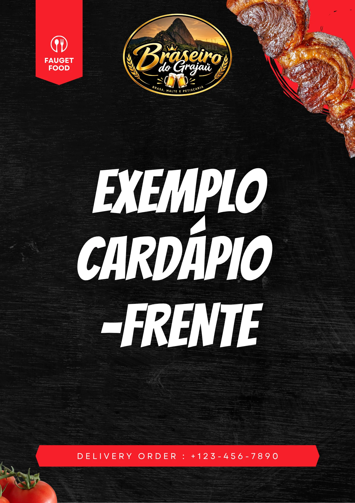

Churrasco na Brasa
Carnes selecionadas preparadas na brasa de carvão vegetal. Picanha, fraldinha, costela e muito mais, com aquele sabor autêntico que só a brasa dá.
Os melhores cortes na brasa, chope incrivelmente gelado, petiscos deliciosos servidos com fartura e ambiente acolhedor. Tudo isso na esquina mais charmosa do Grajaú, sob o cartão postal do nosso bairro.
Somos mais que um restaurante. Somos o ponto de encontro do Grajaú para quem ama carne boa, chope gelado e aquela conversa que não acaba.
Carnes selecionadas preparadas na brasa de carvão vegetal. Picanha, fraldinha, costela e muito mais, com aquele sabor autêntico que só a brasa dá.
Chope tirado na temperatura certa, com aquela espuma cremosa do jeito que você gosta. O melhor chope gelado da Zona Norte do Rio.
Porções generosas, tira-gostos irresistíveis e pratos de boteco preparados com muito carinho. Do clássico ao especial, tem pra todo gosto.
Espaço aconchegante e descontraído para toda a família. Do almoço de domingo ao happy hour do fim de semana, o Braseiro é o seu lugar.
O Braseiro do Grajaú nasceu da paixão pela boa mesa e pelo sabor autêntico do churrasco na brasa. Localizado na esquina da Rua Grajaú com a Rua Canavieiras, somos o ponto de encontro da Zona Norte para quem busca qualidade, sabor e um ambiente de verdade.
Aqui, cada detalhe importa: desde a seleção das carnes até o chope tirado no ponto certo. Somos churrascaria de ambiente familiar no Grajaú, bar com chope gelado e muito mais.
Carnes nobres, petiscos irresistíveis e o chope mais gelado do Grajaú. Tem pra todos os gostos!
Consulte todos os cortes, guarnições, petiscos e bebidas com fotos e preços.
Acompanhe no InstagramMomentos, sabores e a atmosfera única do Braseiro do Grajaú.
Vai comemorar aniversário, reunir a família ou juntar a galera pro chope? Preencha os dados abaixo e confirme sua mesa rapidamente pelo nosso WhatsApp.
Garanta seu lugar sem filas e com atendimento dedicado para curtir o melhor churrasco e chope do Grajaú.
Segunda a Quinta: 11h às 00h
Sexta e Sábado: 11h às 01h
Domingo: 11h às 23h
Na esquina da Rua Grajaú com a Rua Canavieiras. Fácil de encontrar, impossível de esquecer.
Rua Grajaú, n. 247
Esquina com Rua Canavieiras
Grajaú, Rio de Janeiro - RJ
CEP: 20561-144
Segunda a Quinta: 11h às 00h
Sexta e Sábado: 11h às 01h
Domingo: 11h às 23h
